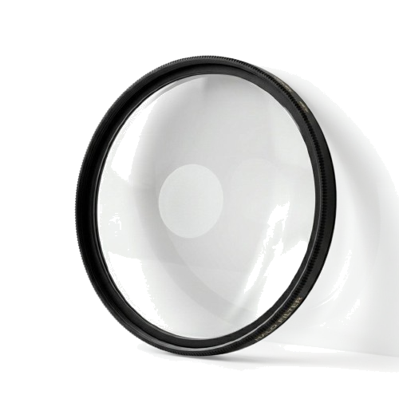
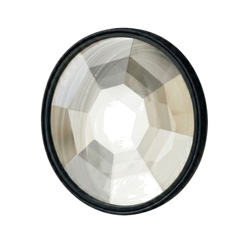
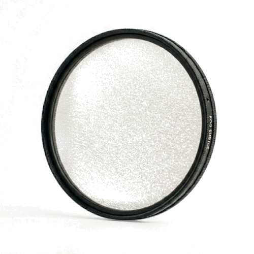

KNIHA OBJEVŮ
Archiv optických experimentů
Log 01: Kaleidoskop
Dnešní pokus s lomem světla přes trojboký hranol přinesl nečekané výsledky. Geometrická symetrie obrazu odpovídá matematickým modelům z roku 1817.
Poznámka: Zkontrolovat čistotu čoček.
Log 02: HALO Filtr
Testování difuzního filtru pro změkčení světelných zdrojů. Tento efekt simuluje organický "glow" kolem jasných bodů.


[ Podržte myš nad snímkem pro aplikaci filtru ]
Technický nákres
Konstrukce vyžaduje precizní nanášení nano-částic na povrch optického skla.
Log 03: Kaledo Filtr
Frakcionace obrazu pomocí kaleidoskopické mřížky. Transformuje realitu do snových geometrických vzorů.

[ Pohybujte myší v náhledu pro rotaci hranolu ]
Geometrie lomu
Při rotaci o 45 stupňů dochází k ideálnímu překryvu faset, což vytváří dokonalou osmičetnou symetrii obrazu.
Log 04: Fog Filtr
Simulace atmosférického rozptylu. Držením levého tlačítka myši aktivujete kondenzaci na čočce (zamlžení).

[ Podržte levé tlačítko myši pro zamlžení ]
Atmosférické poznámky
Efekt je nejsilnější při nízkých teplotách a vysoké vlhkosti okolního prostředí. Vyžaduje časté čištění optiky.
Objednávkový Arch
Pro vyžádání optických artefaktů vyplňte prosím tento protokol:
KONEC ARCHIVU